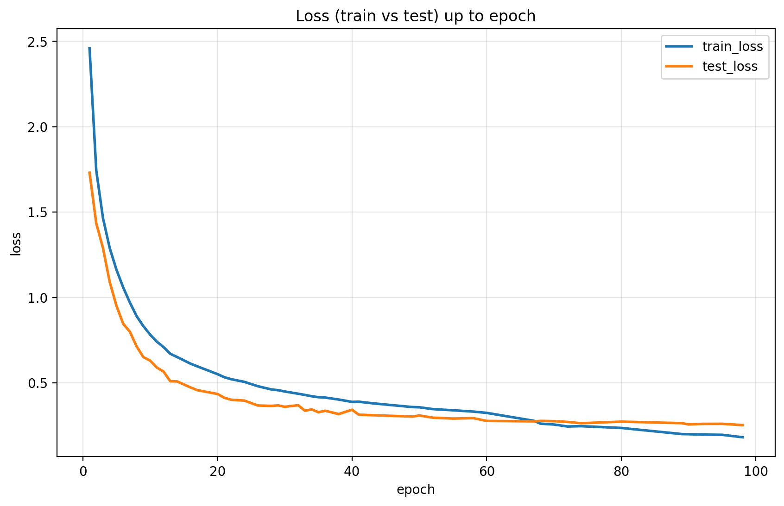
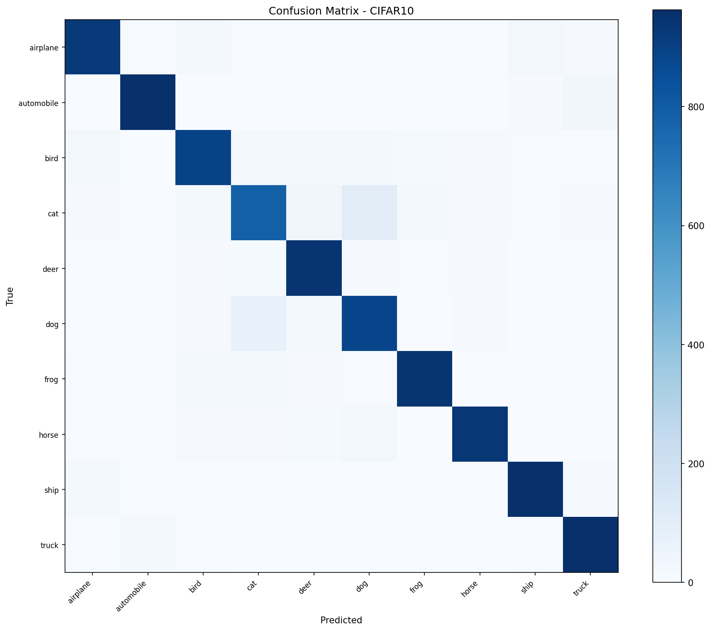
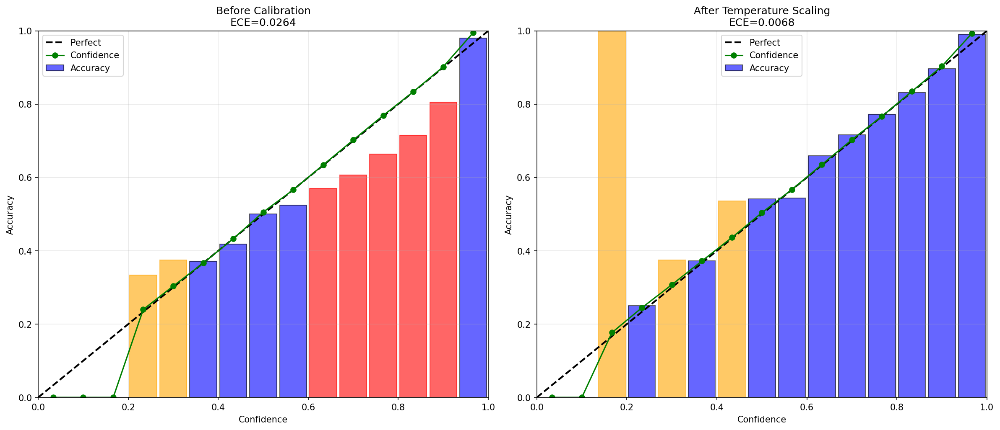
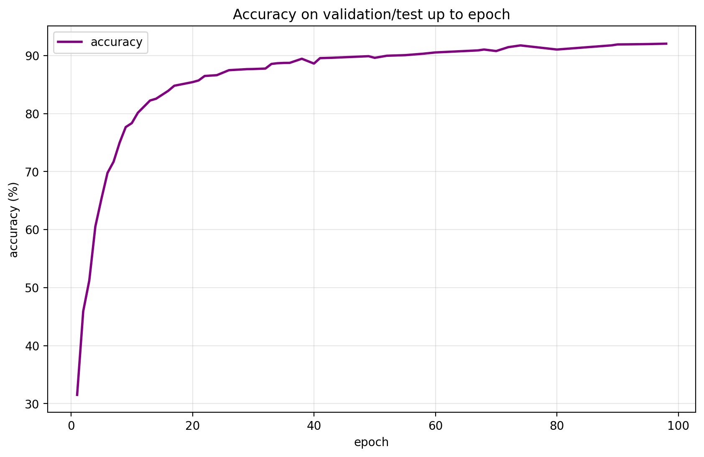
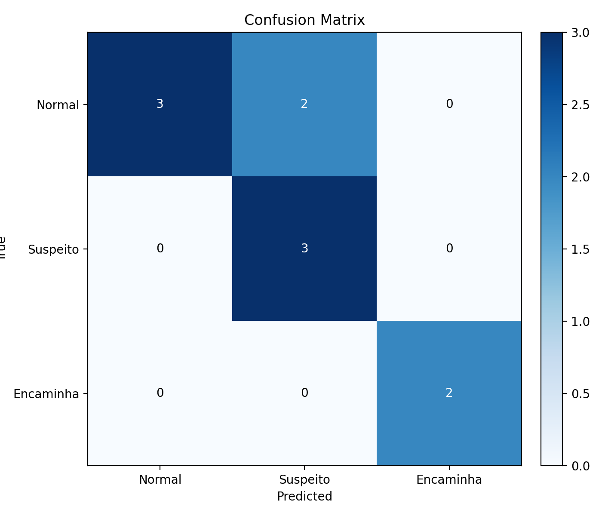
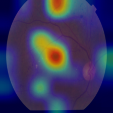
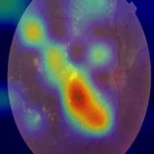

Deep Learning · Pesquisa Independente · Uberlândia, MG
Desenvolvo sistemas de redes neurais do zero — do controle adaptativo de treinamento à aplicação clínica em triagem de retinopatia diabética. Resultados reais, código aberto, impacto mensurável.
Metodologia
GREG é um controlador adaptativo de treinamento inspirado em PID — ele monitora a relação entre ganho de acurácia e custo de épocas em tempo real, ajustando learning rate, paciência e lógica de parada de forma autônoma.
δ mede a eficiência marginal do treinamento — quanto ganho de acurácia se obtém por unidade de custo. Quando δ cai abaixo de um limiar, o controlador age.
Em vez de parar abruptamente, GREG "defende" o checkpoint ótimo: congela o melhor estado e reduz o LR gradualmente antes de encerrar o treinamento.
A mesma lógica foi aplicada com sucesso em CIFAR-10 (visão geral) e APTOS 2019 (imagens médicas) sem reajuste manual de hiperparâmetros entre domínios.
GREG pode ser descrito como um controlador PID discreto sobre o espaço de treinamento — alinhado com literatura de CLR (Smith, 2017) e curriculum learning.
Experimento 01
Rede neural treinada do zero com controle autônomo GREG. Checkpoints ep97–ep99 analisados com calibração de confiança via temperature scaling.




Experimento 02 — Aplicação Clínica
Sistema de triagem baseado em EfficientNet-B3 com mecanismo de atenção CBAM, treinado no dataset APTOS 2019. Alvo de demonstração gratuita via gregretinopatia.com.br.
O modelo combina a eficiência paramétrica da família EfficientNet com blocos de atenção convolucional (CBAM) que destacam as regiões da retina mais relevantes para cada grau de severidade — melhorando tanto acurácia quanto interpretabilidade.
O pipeline completo cobre download de dados, treinamento com GREG, avaliação detalhada e servimento via FastAPI — pronto para integração com sistemas de saúde.



Colaboração
Se você é pesquisador, gestor de saúde pública, desenvolvedor ou empresa interessada em aplicações de IA clínica — entre em contato. Ofereço demonstrações do sistema de retinopatia e estou aberto a parcerias, projetos de P&D e licenciamento.